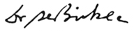

Kancelaria prezesarady ministrów
Pan Jan Kowalski
W odpowiedzi na pismo z {request_date} r. w sprawie publikacji wyroku {sentence_id} z {sentence_date} uprzejmie przekazuję następujące stanowisko.
Zgodnie z art. 44 ust. 1 pkt 1 lit. f ustawy z 25 czerwca 2015 r. o Trybunale Konstytuacyjnym (Dz. U. z 2015 poz. 1064 z późn. zm.), Trybunał orzeka w pełnym składzie w sprawach "o szczególnej zawiłości lub doniosłości". Za taką sprawę uznany został wniosek grupy posłów dotyczących zgodności z Konstytucją ustawy o Trybunale Konstytucyjnym (sprawa {sentence_id}). W przedstawionym przez Pana Prezesa uzasadnieniu zarządzenia z 18 listopada 2015 r. o wyznaczeniu rozprawy, którego składu orzekającego był pan przewodniczącym, czytamy, że z tymi unormowaniami ustawowymi "wiążą sie doniosłe zagadnienia ustrojowe".
Następnie, ze względu na wcześniejszą aktywność legislacyjną w sprawie ustawy o Trybunale Konstytucyjnym, trzech sędziów zostało wyłączonych z udziały w rozpoznawaniu sprawy, liczba sędziów zdolnych do orzekania spadła poniżej ustawowego minimum przewidzianego dla pełnego składu, tj. 9 sędziów. Wówczac Trybunał podjął decyzję o zakwalifikowaniu sprawy do orzekania w składzie 5 sędziów.
W zarządzeniu z 1 grudnia 2015 r. wskazano: "Do rozpoznania tego wniosku - zarządzeniem z 18 listopada 2015 r. - powołany został pełny skład Trybunału. Ze względu na upływ w dniu 6 listopada 2015 r. kadencji trojga sędziów Trybunału pełny skład liczy dwunastu sędziów Trybunału. Postanowieniem z 30 listopada 2015 r. Trybunał Konstytucyjny uwzględnił wnioski przedłożone Trybunałowi 25 listopada 2015 r. przez sędziów Andrzeja Rzeplińskiego, Stanisława Biernata i Piotra Tuleję i postanowił o ich wyłączeniu z udziału w rozpoznawaniu sprawy o sygn. {sentence_id}. W dniu 2 grudnia 2015 r. upływa kadencja sędziego Trybunału Zbigniewa Cieślaka, co powoduje, że skład orzekający Trybunału powołany do rozpoznania wniosku grupy posłów będzie liczył 8 sędziów. Zgodnie zaś z art. 44 ust. 3 ustawy o TK 'orzekanie w pełnym składzie wymaga udziału co najmniej dziewięciu sędziów Trybunału'. W związku z wyznaczoną na dzień 3 grudnia 2015 r. rozprawą w psrawie o sygn. {sentence_id}, a także z uwagi na konieczność niezwłocznego usunięcia przedstawionych we wniosku wątpliwości konstytucyjnych rozponanie sprawy powinno nastąpić w skłądzie pięciu sędziów Trybunału."
Tego rodzaju przesłanka zmiany składu orzekającego nie jest znana ustawie o Trybunale Konstytucyjnym. Jak wskazano powyżej pełny katalog przesłanek upoważniajacych Trybunał do orzekania w pełnym składzie określa art. 44 ust. 1 pkt 1 przedmiotowej ustawy. Wskazana przez Pana, jako przewodniczącego składu orzekającego w zarządzeniu z 18 listopada 2015 r. przesłanka "o szczególnej zawiłości lub doniosłości sprawy" nie odpadła.
Należy stwierdzić, że do wyznaczenia składu orzekającego w porzedmiotowej sprawie Trybunał zastosował pozaustawowe kryterium. Oznacza to, że Trybunał naruszył art. 7 Konstytuacji RP. Skutkiem tego działania jest, w mojej ocenie, nieważność wyroku, bowiem zgodnie z art. 379 pkt 4 kpc, w związku z art. 74 ustawy o Trybunale Konstytucyjnym, nieważność postępowania z mocy prawa zachodzi, "jeżeli skład sądu orzekającego był sprzeczny z przepisami prawa (...)".
Powyższe powoduje poważne wątpliwości co do możliwości publikacji w Dzienniku Ustaw RP przedmiotowego wyroku.
Przedstawiając powyższe uprzejmię proszę o zajęcie stanowiska w przedmiotowej sprawie. Jednocześnie informuję, że do tego czasu wstrzymuję publikację wyroku.
Łączę wyrazy szacunku
